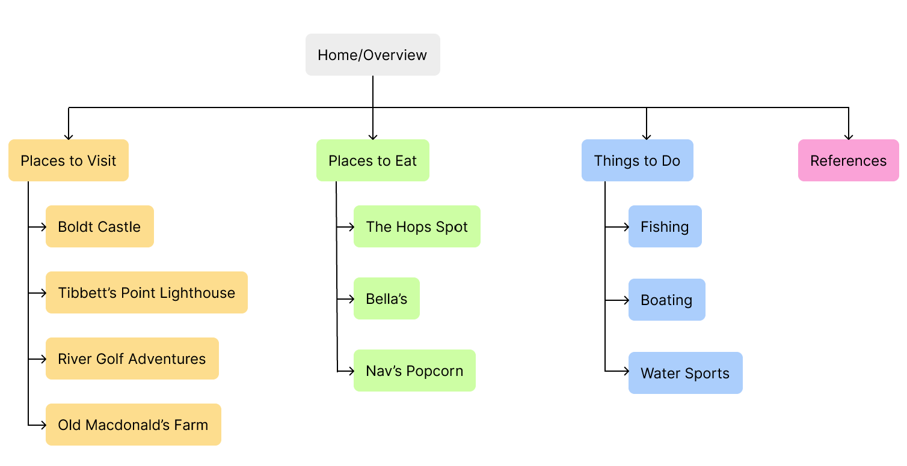
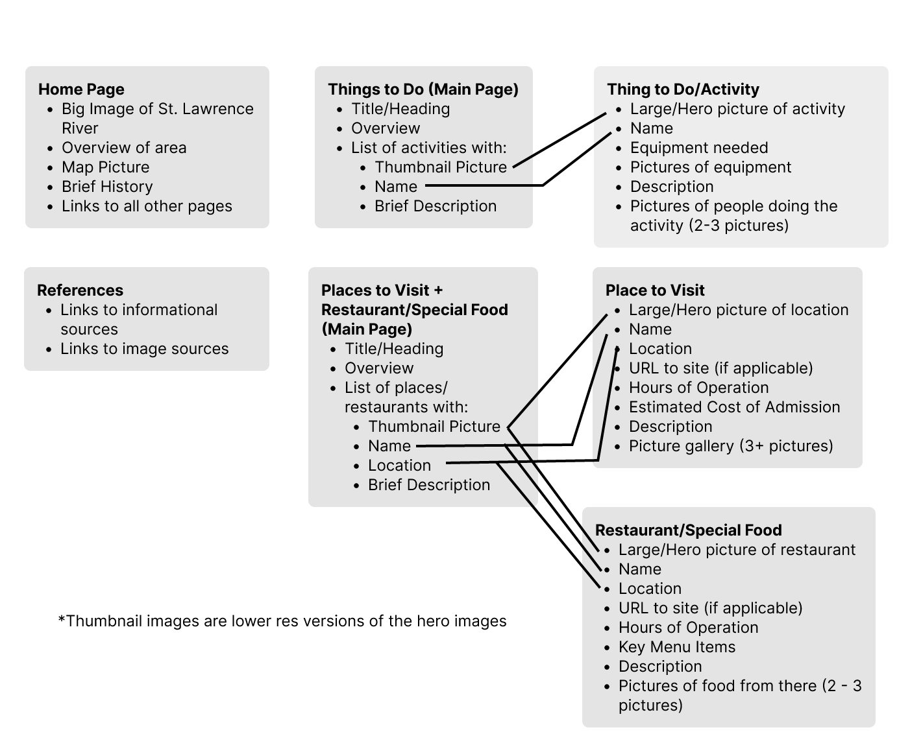
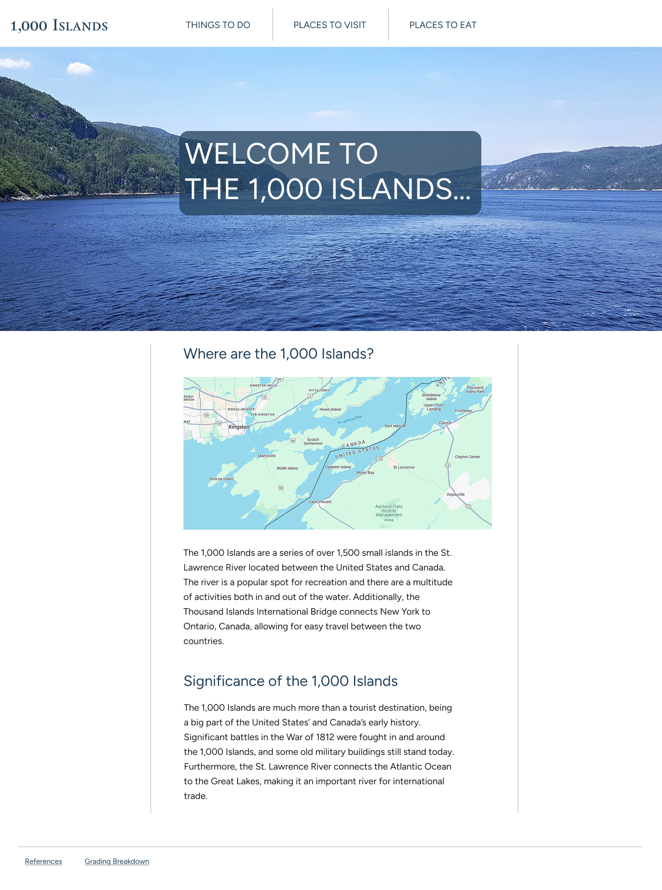
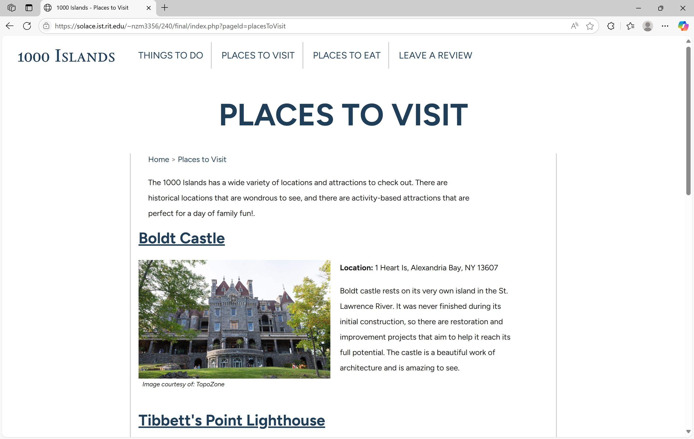
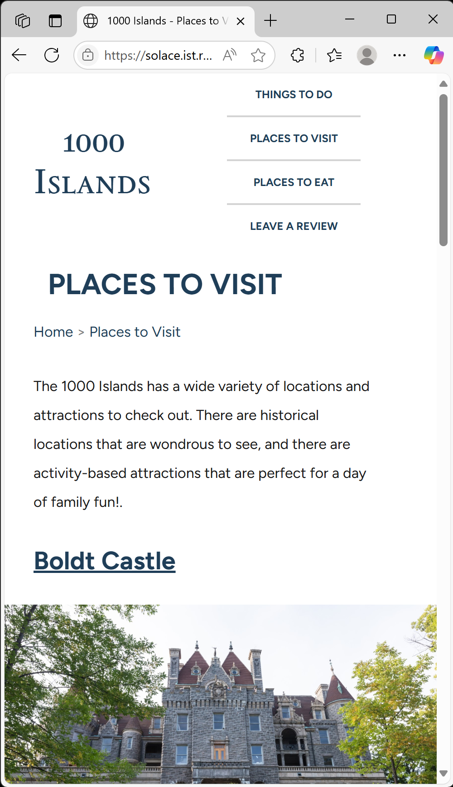
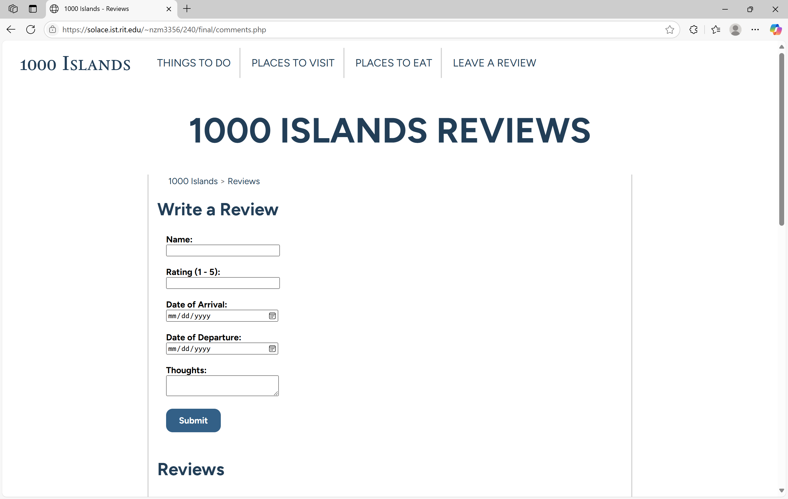
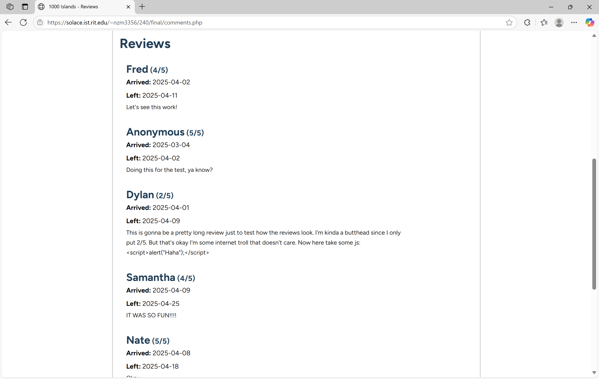
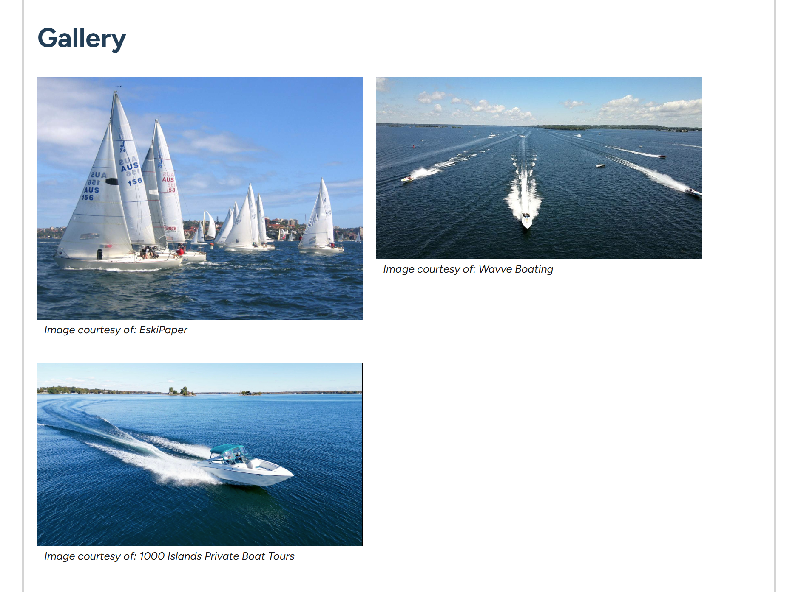
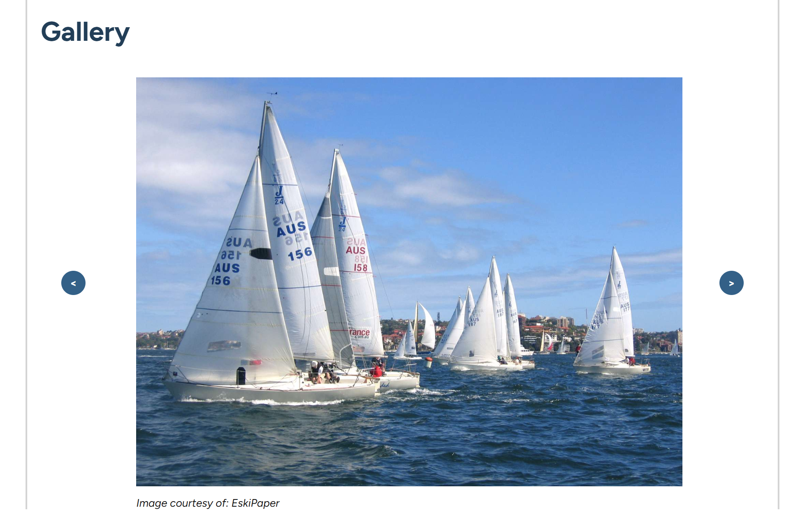

Programming an Informative Travel Website
Most websites provide some type of information to users. Travel websites in particular combine both visual and textual information to entice users into visiting different places. As part of a class project, I was tasked with developing a travel website for a location of my choosing. I chose the 1000 Islands as my location and had full control of the website's content and design. I hand-coded the site with HTML, CSS, JavaScript, and PHP and did not use frameworks, libraries, or vibe coding.
*The website is hosted on a private RIT server, so I cannot link to it.*
Process
Primary Goal
Hand-code the frontend and backend of a website that entices users to visit the 1000 Islands.
Define and Ideate
Before writing up the content for the site, I needed to have an idea of what I wanted the site to have. I'm familiar with the 1000 Islands area, so I began by writing down activities that I was familiar with on paper. Then, I selected the most interesting/enticing activities and categorized them. Using those categories, I made this site map:
After deciding on what pages the site should have, I brainstormed ideas for what each page should include and created this content model:
I also wanted to establish a style for the site before I began building it. To establish a style, I experimented in Figma and made a basic mockup of how a page should look.
The mockup helped me identify and make rules for:
- Color Usage
- Typefaces + Type Hierarchy
- General Page Layout
Write Content and Implement HTML
The first step I took in building the site was writing the content and finding images to use. I kept track of the source for each image and gave credit next to the image and on a separate “References” page. I authored the HTML as I was writing the content, which saved a significant amount of time. Things I kept in mind as a wrote the markup were:
<header>, <nav>, <main>, <section>, and <footer> instead of generic divs.
Using the same class names and same number/structure of divs in each <section>. This made writing the site's CSS significantly easier.
Implement CSS
When I began writing the CSS for the website I focused on the desktop view. I worked from top to bottom; styling the header, then the page's main content, and finally the footer. Once I established the site's desktop view, I added 4 breakpoints with media queries to make the page responsive and fit on mobile devices.
Desktop/Wide View
Mobile/Narrow View
For the mobile view, I stacked the website's navigation into a column because I did not have the time to implement a hamburger menu. However, I would use a hamburger menu in the future since it would take up less space and put more emphasis on the site's content. Additionally, it would allow more navigation items to be added without pushing the content further down the page.
Some things I did that made writing the CSS easier were:
Made changing the color of multiple elements very easy. It also prevented the need for memorizing or copy/pasting hex color values.
Made the site somewhat responsive even without media queries.
Made it easier to decide on what values to use since it narrowed down the number of possible options.
Implement Backend
The backend was written in PHP and it used a mySQL database to add more functionality to the website. The main changes I made during this step were:
Instead of using HTML files to hold the content, I pulled the content from a mySQL database and displayed it using PHP.
I made PHP files for sections of HTML that were used on every page (e.g., header, footer), which allowed me to put those sections of HTML wherever I needed to.
Users can leave a review of their experience at the 1000 Islands and see other traveler's reviews. The reviews are sent to and pulled from the mySQL database.
Review Form
User Reviews
Real users did not make these reviews - they are example reviews used for testing.
Add more Interactivity with JavaScript
The website was mostly finished at this point, but the “Gallery” section on each page was lacking. The main issue was that all of the images were shown at once with equal emphasis on each one. There was no focal point for the user, so users' eyes could easily skip past the images without looking at them. To fix this, only one image was displayed at a time and users could manually flip between them with arrow buttons. This made the images larger and placed the focus on only one thing at a time.
Old Gallery
New Gallery
I also programmed a feature that allows users to see a larger version of a “Gallery” image when they click on it. The large image could then be dismissed by clicking anywhere. This feature is showcased below:
Project Reflections
The travel website does a good job of showing users fun locations, activities, and attractions at the 1000 Islands. However, I think that including information about hotels and transportation would be necessary in future versions of this site. Including that information would allow users to plan their visit to the 1000 Islands rather than just giving them ideas of what to do.
My main takeaways for this project are:
I had a plan for my site's content and design but no plans for my code. As a result, changing one file usually meant that I had to change other files too. For example, when I made a change in the JavaScript file that controls the gallery, I sometimes had to change the gallery PHP file. Specifically, I had to edit the <figure> tags that contained the gallery's images.
As I developed the website, I had to make tradeoffs between ideal design and ease of implementation. Understanding what made my design successful allowed me to make tradeoffs without compromising the effectiveness of the final website. For example, I sacrificed control over kerning and tracking to make development easier, but did not sacrifice text hierarchy since it's essential to the website's readability.